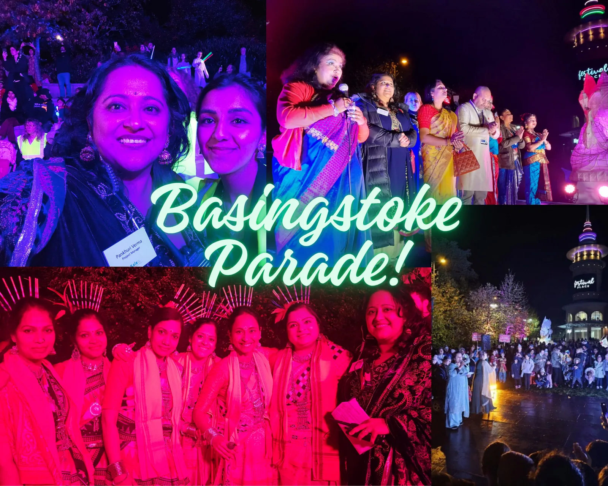
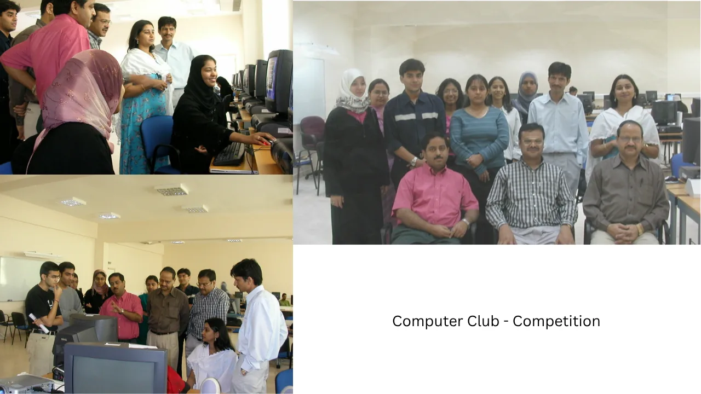
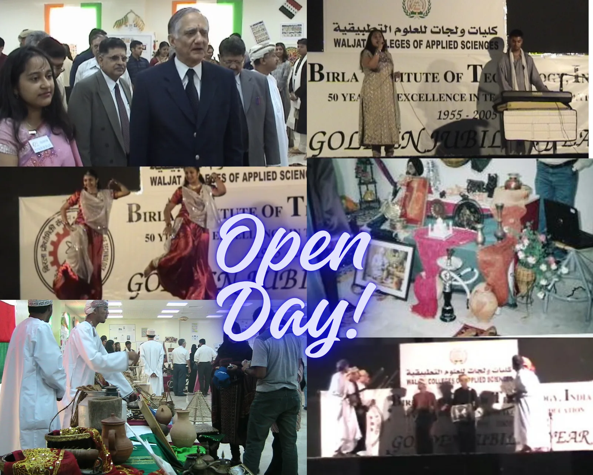

Live Events · Cultural Programmes · Community Experiences
I turn ideas into experiences people remember.
I plan and deliver public celebrations, cultural events, live shows and community programmes from concept to curtain call — bringing together performers, volunteers, suppliers, sponsors and operational teams to make the day work.
Calm under pressure, organised behind the scenes, and always focused on the experience in front of the audience.
Planning and live delivery for a large public cultural celebration, coordinating performers, volunteers, parade activity, programme timings and operational teams. The role requires clear communication, rapid problem-solving and keeping multiple moving parts aligned while the event is live.
Managing public-event delivery and amphitheatre operations, including performers, stage flow, programme timings, volunteers and audience experience. I work across event teams and partners to keep the programme safe, organised and running to plan — while adapting quickly when live-event realities change.
Amphitheatre
Stage management
Running order
Audience experience
Stakeholders
On-the-day delivery

UK2+ years
Mehendi Mela
Event Planner & Organiser
Planning and delivering a lively cultural community event from initial concept through to event day, including programme design, performers, activities, venue requirements, promotion and live logistics. The focus is on creating an inclusive, festive experience while keeping delivery structured behind the scenes.
Concept & planning
Programme design
Venue logistics
Performers
Promotion
Community engagement
University, OmanMultiple events yearly
University Events & Student Clubs
Club Founder · Event Organiser
Founded the Technology / Computer Club and Cultural Club and organised multiple events each academic year, including computer competitions and exhibitions, university Open Days and cultural programmes. A flagship Cultural Evening welcomed more than 3,000 people and involved sponsorship, stage setup, performers, logistics, promotion and security planning for a large public gathering in Oman.
Sponsorship
Exhibitions
Competitions
Open Days
Stage setup
Security
Large audiences

Computer Club competition

University Open Day
Independent productionsOngoing
Live Music & Cultural Shows
Producer · Organiser · Performer · MC
I create and organise my own live shows, combining event planning with a performer's understanding of what artists and audiences need. I coordinate musicians, rehearsals, sound requirements, running orders, promotion and the overall flow of the live experience.
Performers, volunteers, technical teams, suppliers, sponsors, community partners and stakeholders.
03
Deliver
Stage operations, running orders, audience flow, issue resolution and calm decision-making on the day.
04
Engage
Hosting, MC, performer communication and audience experience — informed by years as a professional performer.
03 · My edge
My edge
I understand both sides of the stage.
I am not only an event organiser. I am also a professional Bollywood singer,
Hindustani classical music teacher and experienced MC.
That gives me a practical understanding of performer needs, stage timing, sound,
rehearsal pressure, audience energy and the small details that can change how an event feels.
Alongside that, my senior leadership background brings structured project management,
stakeholder communication and the ability to make good decisions when plans change.
Let’s create something memorable
Looking for someone who can bring structure, creativity and calm to your event?